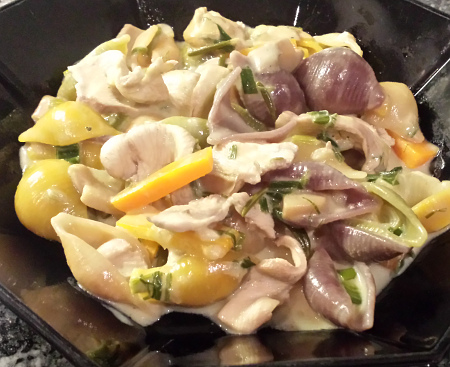

| Zutaten für 2 Personen: | |
| 1 (150g) | Trutenplätzli |
| 1 El | Weisswein oder Bouillon |
| 0.5 El | Sojasauce |
| 1 | kleine Zwiebel |
| 1 | Knoblauchzehe |
| 0.5 Bund | Frühlingszwiebeln |
| 1-2 | Rüebli |
| 4.5 dl | Hühnerbouillon |
| 1 Beutel (13 g) | getrocknete Champignons |
| 150 g | Müscheli Teigwaren |
| 0.5 Tl | Maizena |
| 1 dl | Halbrahm |
| 1/4 Tl | Rosmarinpulver |
Ca. 30 Minuten
Eine Marinade aus 1 El Weisswein oder Bouillon und 0.5 El Sojasauce in einem Gefäss zubereiten. Das Trutenplätzli in Streifen schneiden und in die Marinade geben. Das Fleisch zugedeckt mindestens 15 Minuten marinieren.
Den halben Bund Frühlingszwiebeln mit dem Kraut in feine Streifen schneiden.
Die Rüebli in dünne Stäbe schneiden.
Die Bouillon zubereiten.
Die Zwiebel und die Knoblauchzehe schälen und fein hacken und mit 1 El Öl in eine grosse Pfanne oder Wok geben
Erst die Zwiebeln mit dem Knoblauch andünsten. Danach die Frühlingszwiebeln und Rüebli mitdämpfen.
Mit der Hühnerbouillon ablöschen.
Den Beutel getrocknete Champignons zugeben (nicht vorher einweichen). Die Müscheli Teigwaren zugeben und aufkochen. Die Hitze stark reduzieren, zugedeckt während ca. 15 Minuten weich köcheln und von Zeit zu Zeit umrühren.
5 Minuten vor Ende das marinierte Fleisch zugeben und gar ziehen lassen.
2 Minuten vor Ende Maizena mit Rahm anrühren und unter Rühren zugeben.
Mit wenig Salz, Pfeffer und Rosmarinpulver würzen und anrichten.
Betty Bossi, Preisgünstig, raffiniert kochen, S 118
Schmeckt fein. RE 6 März 2011
Am 8 Oktober 2016 erneut zubereitet weil es im Moment meint drittpopuläres Rezept auf der Webseite ist. Das Rezept will mir nicht einfach ins Hirn aber wenn man es genau befolgt gibt es ein nettes Gericht von dem man Resten am anderen Tag noch aufwärmen kann. RE
@LINKBACK_TAG@ @WAKELOCK@